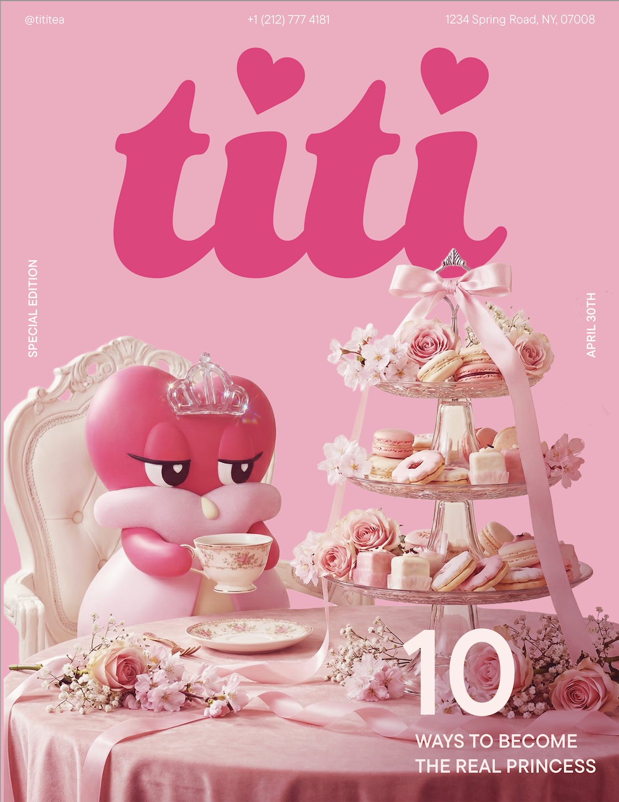
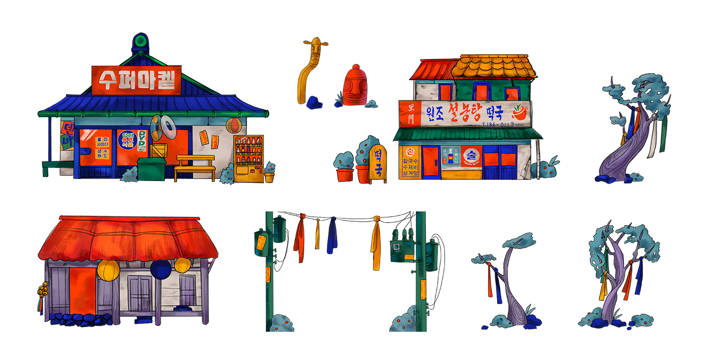
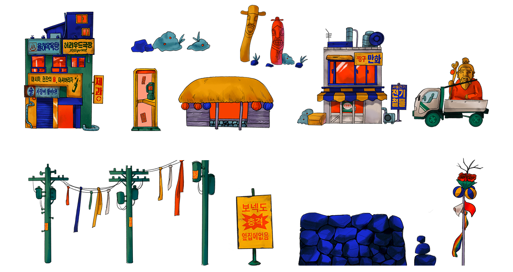

Game design:
Find the Goblins
년도
작업 도구
지도 교수
2026
Unity, C#, Procreate
Eric Nunez, Luiz Ludwig

Context
Titi Tea는 ‘공주’라는 개념을 차라는 매개체를 통해 소비자와 연결하는 중국식 티 브랜드입니다. 차를 마시는 행위를 통해 누구나 공주의 삶을 상상하고 자신만의 방식으로 이 과정을 즐길 수 있도록 만들고자 했습니다. 고객에게 자신의 일상을 보다 아름답고 의미 있는 순간으로 인식하도록 돕는 것을 목표로 합니다.
Strategy
브랜드의 핵심 개념인 '공주'를 보다 직접적으로 전달하기 위해 마스코트를 중심으로 프로젝트를 진행하였습니다. 워드마크의 핵심 요소인 하트 모양을 기반으로 제작된 두 마스코트는 늘 절제되고 우아한 태도를 유지하며, 브랜드의 정체성을 시각적으로 구현합니다. 이들은 단순한 캐릭터를 넘어, 소비자가 지향하는 이상적인 이미지를 상징합니다. 모든 3D 이미지는 Nano Banana를 통해 제작되었습니다.


배경 일러스트 요소
Process
‘공주 차 브랜드’라는 키워드를 바탕으로 세 가지 방향성을 탐구하였습니다. 첫 번째 방향은 브랜드의 키치한 감성과 공주라는 정체성을 직관적으로 드러내는 데 초점을 맞추었고, 두 번째 방향은 픽셀 형태의 정사각형 반복을 통해 구조적인 방식으로 여성스러움을 표현하고자 했습니다. 세 번째 방향은 브랜드의 중국적 요소를 강조하여 차 문화의 기원을 시각적으로 드러내는 접근이었습니다. 이후 주요 타깃 소비자인 15–25세 미국 여성층을 기준으로 피드백을 반영한 결과, 브랜드의 개성과 매력을 가장 효과적으로 전달할 수 있는 첫 번째 방향으로 최종 결정하였습니다.